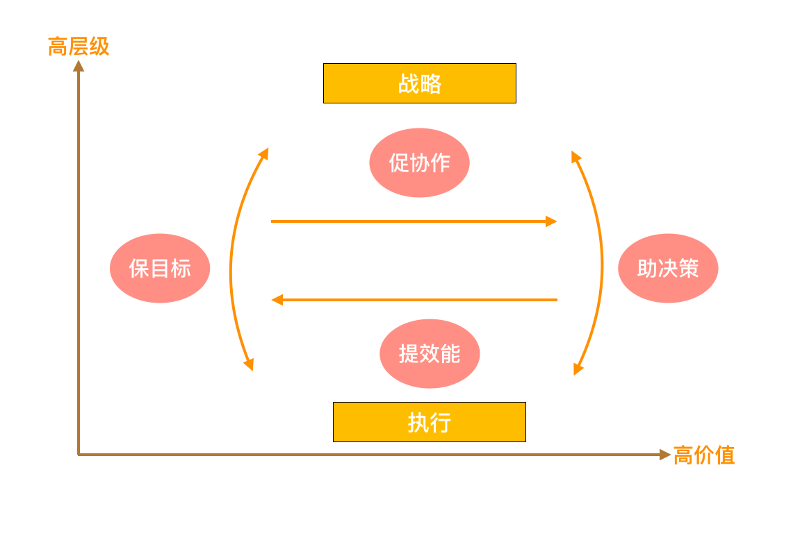
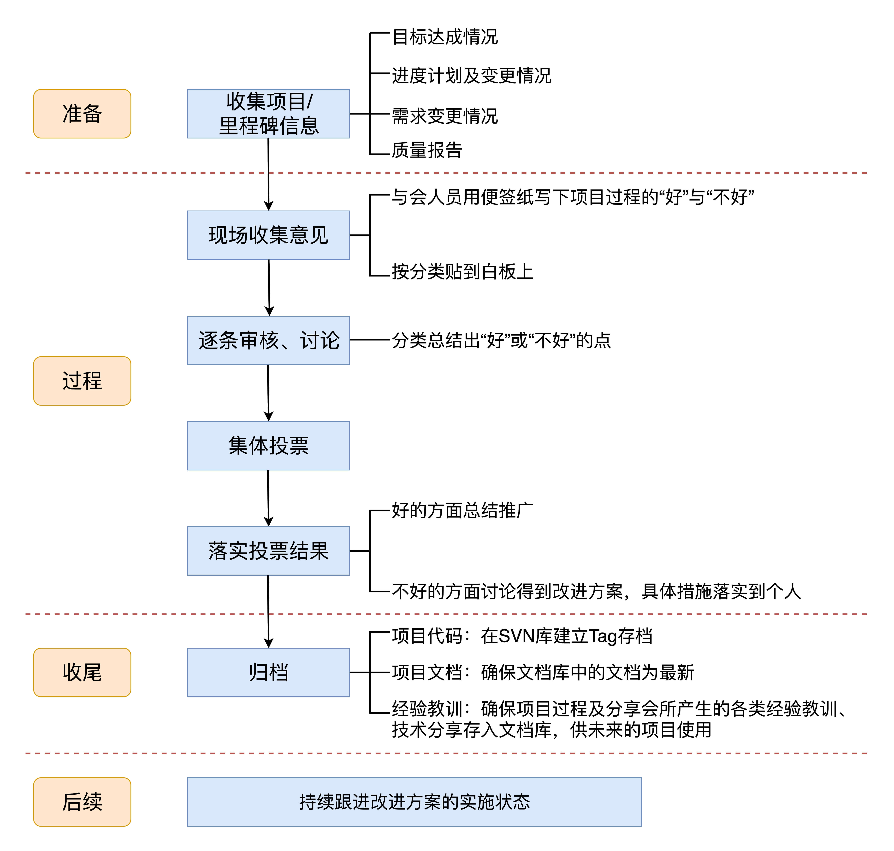

成功施加影响的三个层次，分别是让人知道要做（Awareness）、有动力做（Desire）和有能力做（Ablility）。
只是让人知道要做，但并不足以让人产生动力，去促成有效的行动。
讲清楚为什么要做，为什么要现在做，获取理解及认同，激发团队的动力是项目经理成功授权工作的关键。
项目经理不应该每天逐个人逐条事项的监督，而是要明确目标，建立机制，并让这个机制运转起来，最终在项目组形成一种良性的秩序。
理清项目思路的几个问题：
- 在你的项目组中，时间、成本、质量、范围这几个因素，到底哪个更重要？哪些是允许有一定调整空间的？
- 各个角色目前的痛点在哪儿？哪些是最先需要解决的？这些问题背后潜在的原因是什么？
- 团队对于这个痛点的改进是否有真实需要？需求的迫切程度如何？
- 你的老板或项目发起人对于项目管理以及你本人的定位是怎样的？关于这些问题与可能的改进，你是否与其沟通过并达成了一致？
- 如果你打算引入新方法或工具，更适合用怎样的路径进行，是自上而下地全面推广，还是自下而上地一步步优化呢？最有可能从哪个问题切入？
保目标、助决策、提效能、促协作。保目标、助决策是要打通从战略到执行的闭环，提效能、促协作则是打通上下游的闭环。

保目标：把业务最顶层的战略意图，清晰地反应在每个人每一天的执行中，其实是件非常不容易的事情，需要一层层地进行拆解。首先，你要围绕组织绩效目标，定位出核心的3-5件要事，即关键战役，再把关键战役进行规划分解，拆到可交付可验收的里程碑，最后落地到版本/迭代的工作安排中。

促决策：通过清晰而系统的反馈机制和平台，把执行中的进展状态、变更、风险等集中呈现，以帮助管理者更好地进行优化和调整。
提效能：要去关注和消灭团队中的低价值工作所引发的效能痛点。
促协作：着眼于使用各种项目管理方法和工具，让高价值工作者可以更好地合作。
跟发起人聊聊这些：

要想让干系人的态度发生转变，最重要的就是弄清楚他抵制的原因，强烈的态度背后，一定反映了干系人对现状的某种认知。只有真正地理解了对方的逻辑，才有可能进一步对其施加影响。
和职能经理沟通这些：

和团队成员沟通这些：

计划是“市场需求或发起人的期望”和“团队生产力”之间平衡的结果。从本质上来讲，计划是用来对焦的！做计划，是个集体对焦的过程。
好的计划，不仅要给出时间节点，还要给出依据和来源，这样才能更有效地对焦。
没有达成共识的计划是不具备任何效力的。
计划每一次进行调整，都要确保项目中的每个人知道当前的计划是什么，调整计划需要怎样的决策过程，都需要谁参与决策。
在项目执行的过程中，想要降低偏差、减少返工，你就需要构建系统能力，在产品研发的整个过程中，建立起真正闭环反馈的产品验证机制。开环与闭环之间的关键差异，就在于有没有反馈环节，以及系统是否会根据反馈自动调节。
OARP决策机制：
负责人（Owner）：负责给出方案，组织各方讨论并推进做出最终的决定。
批准者（Approver）：最终批准者。
审核者（Reviewer）：负责人和批准者挑选出的审核人。审核者有责任对文档进行文化市场分析，并提出反馈意见，负责人必须重视并给予回复。
参与者（Participant）：其他提供意见的人。参与者会收到文档的相关信息，可以对相关问题做出反馈。


作为项目管理人员，当事情已经超出了你的可控范围时，你首先要做的，就是第一时间直面问题，如实地呈现和反馈遇到的困难。对于整个项目而言，你的真实和坦诚反而是最重要的。
紧急报告一般不需要拘泥于具体的形式，关键在于言简意赅地传递信息，并组织后续的跟进动作，一般来说包含5个基本元素：事件描述、影响后果、跟进分析、响应措施（包含负责人及时间表）、所需支持。
项目周报：

复盘会：

认真地做好一次复盘，每次复盘后聚集一个改进点。聚集点别太多，一个就够了。
应对变更：
- 达成最小共识，变更是有代价的
- 源头治理，一次把事情做对
- 快试错，不可抗力巧应对
当寻常的渠道不管用的时候，就要看项目经理的信息网络了。项目经理一定不能脱离团队。如果没有群众基础，只是坐等别人给你上报风险，那你的工作就远远没有做到位。一个优秀的项目经理，必须是一个优秀的“情报人员”，上至最高的项目发起人及组织的各层决策者，下至项目最边缘的人群，比如外包、实习生、短期借调支持人员等，你都要跟他们建立广泛且深入的联系。
应对高危风险：
- 挖掘出这些致命风险，把它们变为可见的、可谈的
- 正视风险，不存侥幸心理
- 在项目的核心团队中，周期性地梳理和同步风险状态
一个已经进入规模增长期的稳定业务对客户端质量标准的定义：

提高质量：
- 每月坚持开线上Bug大会
- 持续进行内部Bug分类
- 建立质量大盘，拉通不同业务线或模块的每月Bug趋势
从需求到发布的质量活动概览：

开会“断舍离”，只开最有必要的会，会而有议，议而有决，决而有行。

问题并不赞同于时机，只有把问题和痛点关联起来，才能形成一个好的时机。
向上高效沟通：
- 找到“核心关注点”
- 用数据和事实来作“论点”
- 给出一个小小的“行动点”
非职权领导力的六力模型：执行力、信息力、感知力、透明力、影响力、整合力。
一个有始有终的闭环，意味着你要对自己的每一个行为负责，清楚地了解为什么做，目标是什么，做完之后的效果是怎样的，还有什么问题，以后要做哪些改进。如果中途有变化，也要及时跟相关方明确说明调整或取消的原因是什么。